SMC_high_dim_heavy_tails
▼Heavy_Tails (MvStudentT, nu, 8 runs)
Pooled Chains results
Mean Rmse
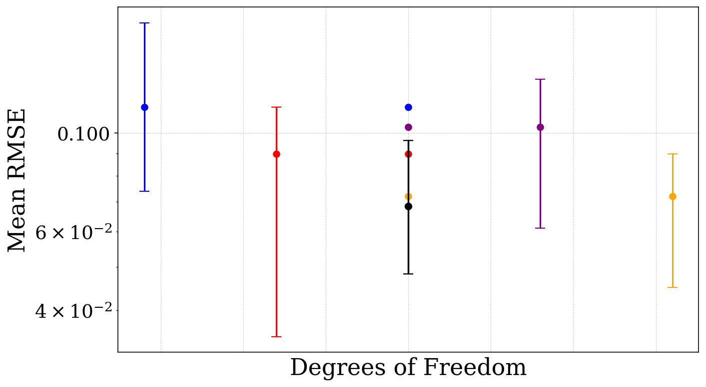
Sampler vs IID stats
| Sampler | Varying | t-stat | p-value | Glass Δ |
|---|---|---|---|---|
| DEMetro_Z | 2.1 | 0.946 | 0.361 | 0.512 |
| Metro | 2.1 | 1.548 | 0.16 | 1.983 |
| HMC | 2.1 | 0.511 | 0.618 | 0.336 |
| SMC | 2.1 | -0.418 | 0.682 | -0.202 |
Sampler vs Sampler stats
| Sampler Pair | Varying | t-stat | p-value | Cohen’s d |
|---|---|---|---|---|
| HMC_vs_SMC | 0 | 1.040 | 0.333 | 0.368 |
| HMC_vs_DEMetro_Z | 0 | -0.358 | 0.731 | -0.127 |
| DEMetro_Z_vs_SMC | 0 | 1.387 | 0.208 | 0.491 |
| HMC_vs_Metro | 0 | -1.783 | 0.118 | -0.630 |
| Metro_vs_DEMetro_Z | 0 | 1.239 | 0.255 | 0.438 |
| Metro_vs_SMC | 0 | 1.841 | 0.108 | 0.651 |
Mean Rmse (scatter)
Glass’s Δ Mean RMSE
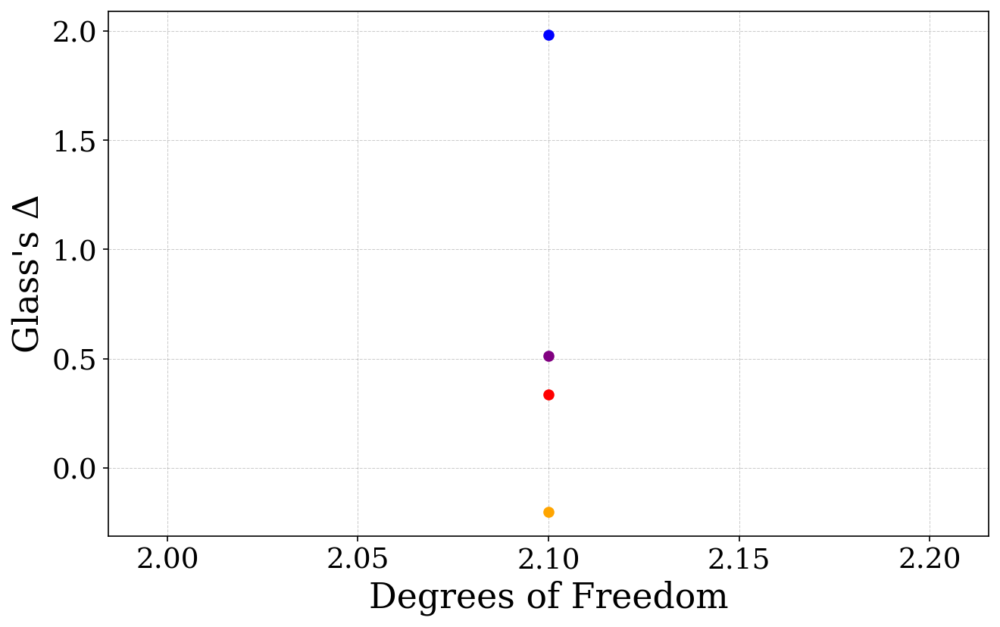
Glass’s Δ table
| Sampler | Varying | MCMC Mean | IID Mean | IID Std | Glass’s Δ |
|---|---|---|---|---|---|
| DEMetro_Z | 2.1 | 0.095 | 0.075 | 0.040 | 0.512 |
| Metro | 2.1 | 0.154 | 0.075 | 0.040 | 1.983 |
| HMC | 2.1 | 0.088 | 0.075 | 0.040 | 0.336 |
| SMC | 2.1 | 0.067 | 0.075 | 0.040 | -0.202 |
Var Rmse
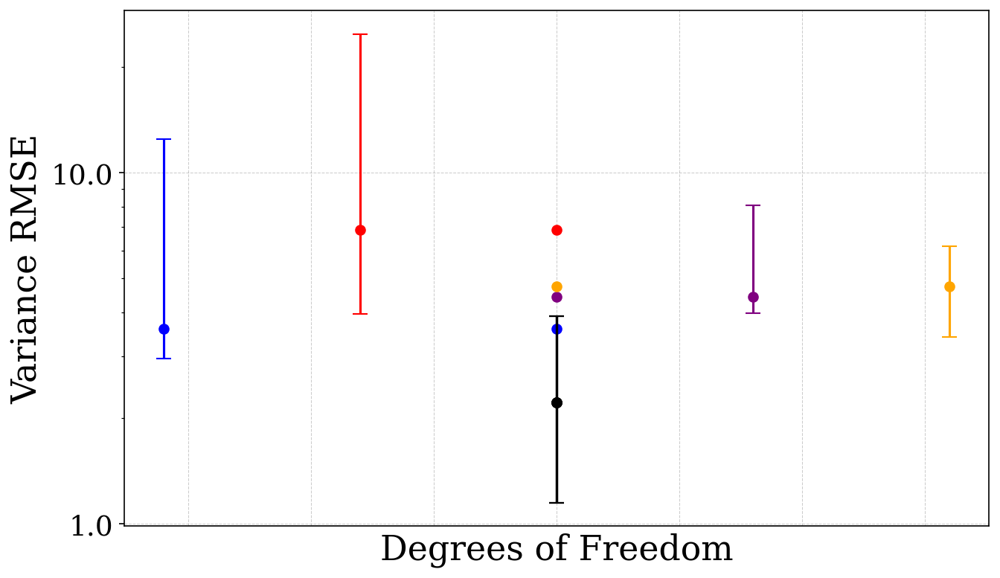
Sampler vs IID stats
| Sampler | Varying | t-stat | p-value | Glass Δ |
|---|---|---|---|---|
| DEMetro_Z | 2.1 | 0.133 | 0.896 | 0.057 |
| Metro | 2.1 | 0.116 | 0.91 | 0.048 |
| HMC | 2.1 | 0.643 | 0.531 | 0.287 |
| SMC | 2.1 | -0.052 | 0.959 | -0.022 |
Sampler vs Sampler stats
| Sampler Pair | Varying | t-stat | p-value | Cohen’s d |
|---|---|---|---|---|
| DEMetro_Z_vs_SMC | 0 | 1.438 | 0.194 | 0.508 |
| Metro_vs_SMC | 0 | 0.516 | 0.621 | 0.183 |
| Metro_vs_DEMetro_Z | 0 | -0.061 | 0.953 | -0.022 |
| HMC_vs_SMC | 0 | 1.370 | 0.213 | 0.484 |
| HMC_vs_DEMetro_Z | 0 | 0.864 | 0.416 | 0.305 |
| HMC_vs_Metro | 0 | 1.369 | 0.213 | 0.484 |
Var Rmse (scatter)
Glass’s Δ Variance RMSE
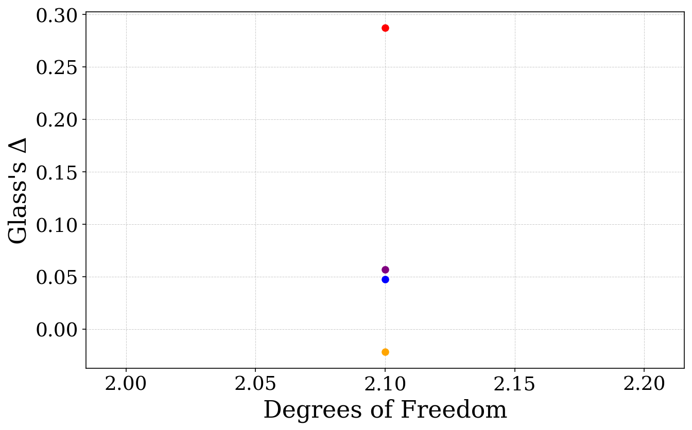
Glass’s Δ table
| Sampler | Varying | MCMC Mean | IID Mean | IID Std | Glass’s Δ |
|---|---|---|---|---|---|
| DEMetro_Z | 2.1 | 9.207 | 8.262 | 16.617 | 0.057 |
| Metro | 2.1 | 9.052 | 8.262 | 16.617 | 0.048 |
| HMC | 2.1 | 13.037 | 8.262 | 16.617 | 0.287 |
| SMC | 2.1 | 7.900 | 8.262 | 16.617 | -0.022 |
Wasserstein Distance
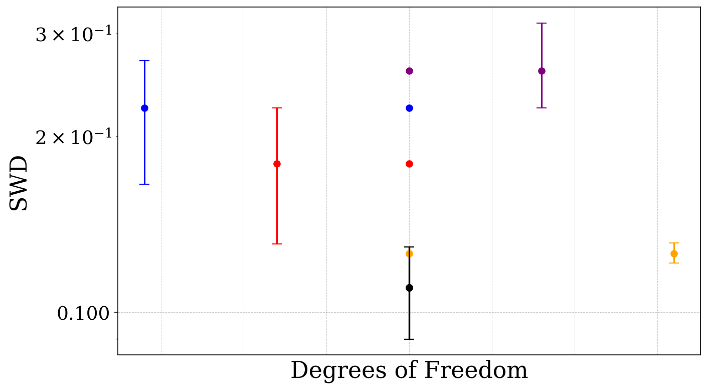
Sampler vs IID stats
| Sampler | Varying | t-stat | p-value | Glass Δ |
|---|---|---|---|---|
| DEMetro_Z | 2.1 | 6.108 | 5.4e-05 | 3.998 |
| Metro | 2.1 | 2.623 | 0.0312 | 3.995 |
| HMC | 2.1 | 1.722 | 0.126 | 3.053 |
| SMC | 2.1 | 0.597 | 0.56 | 0.273 |
Sampler vs Sampler stats
| Sampler Pair | Varying | t-stat | p-value | Cohen’s d |
|---|---|---|---|---|
| Metro_vs_SMC | 0 | 2.643 | 0.0333 | 0.935 |
| DEMetro_Z_vs_SMC | 0 | 9.084 | 4.02e-05 | 3.212 |
| HMC_vs_DEMetro_Z | 0 | -0.538 | 0.607 | -0.190 |
| HMC_vs_SMC | 0 | 1.608 | 0.152 | 0.569 |
| HMC_vs_Metro | 0 | -1.252 | 0.251 | -0.443 |
| Metro_vs_DEMetro_Z | 0 | -0.002 | 0.998 | -0.001 |
Wasserstein Distance (scatter)
Glass’s Δ WS
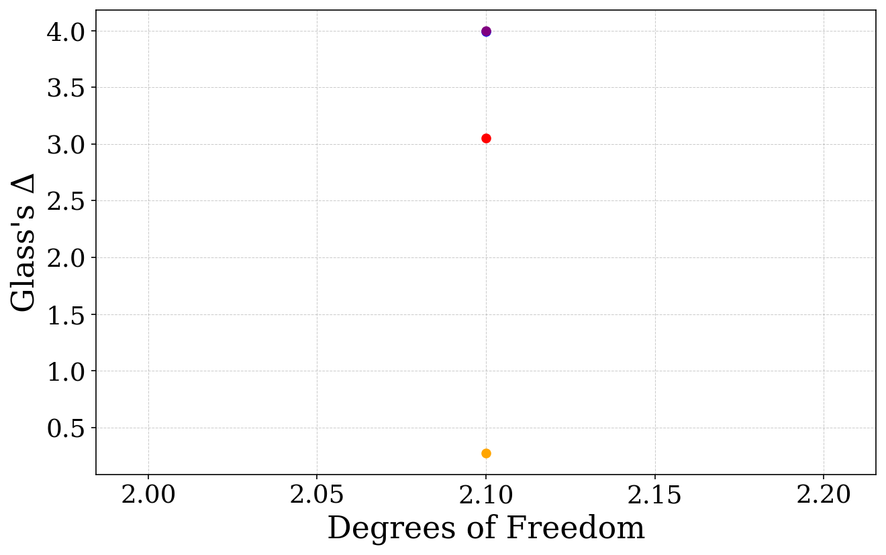
Glass’s Δ table
| Sampler | Varying | MCMC Mean | IID Mean | IID Std | Glass’s Δ |
|---|---|---|---|---|---|
| DEMetro_Z | 2.1 | 0.268 | 0.118 | 0.037 | 3.998 |
| Metro | 2.1 | 0.268 | 0.118 | 0.037 | 3.995 |
| HMC | 2.1 | 0.232 | 0.118 | 0.037 | 3.053 |
| SMC | 2.1 | 0.128 | 0.118 | 0.037 | 0.273 |
Mmd Rff
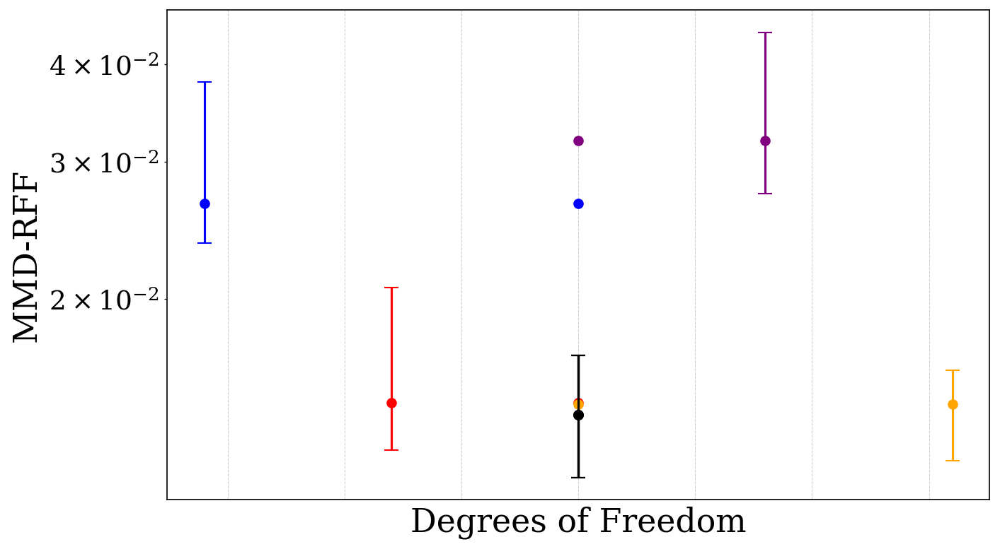
Sampler vs IID stats
| Sampler | Varying | t-stat | p-value | Glass Δ |
|---|---|---|---|---|
| DEMetro_Z | 2.1 | 5.591 | 0.000324 | 5.416 |
| Metro | 2.1 | 3.374 | 0.0097 | 4.583 |
| HMC | 2.1 | 1.242 | 0.245 | 1.176 |
| SMC | 2.1 | 0.035 | 0.972 | 0.016 |
Sampler vs Sampler stats
| Sampler Pair | Varying | t-stat | p-value | Cohen’s d |
|---|---|---|---|---|
| Metro_vs_SMC | 0 | 3.856 | 0.00624 | 1.363 |
| DEMetro_Z_vs_SMC | 0 | 5.947 | 0.000572 | 2.103 |
| HMC_vs_DEMetro_Z | 0 | -3.609 | 0.00864 | -1.276 |
| HMC_vs_Metro | 0 | -2.692 | 0.031 | -0.952 |
| Metro_vs_DEMetro_Z | 0 | -0.503 | 0.63 | -0.178 |
| HMC_vs_SMC | 0 | 1.370 | 0.213 | 0.484 |
Mmd Rff (scatter)
Glass’s Δ MMD-RFF
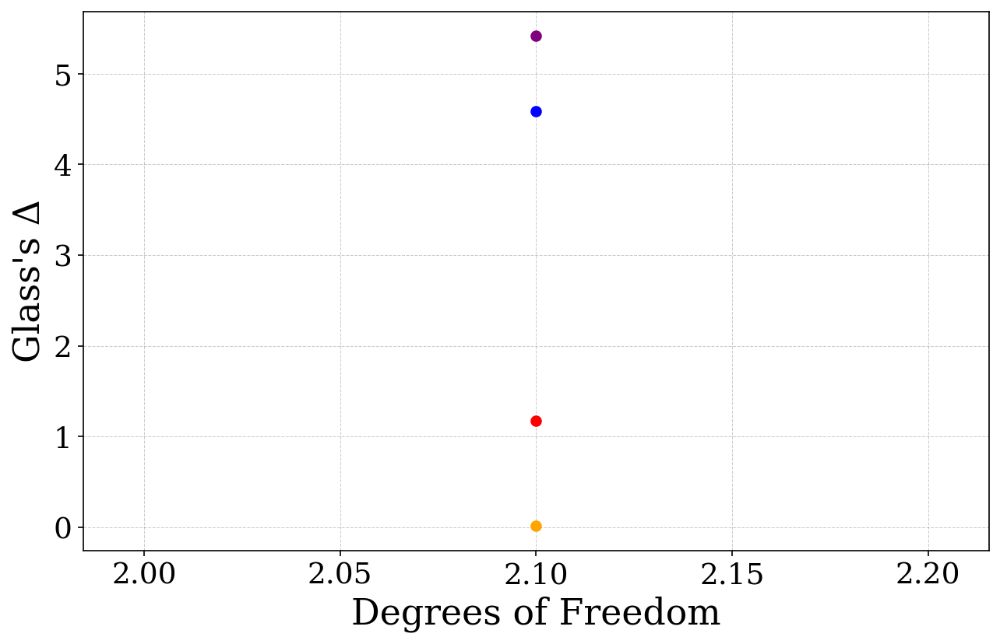
Glass’s Δ table
| Sampler | Varying | MCMC Mean | IID Mean | IID Std | Glass’s Δ |
|---|---|---|---|---|---|
| DEMetro_Z | 2.1 | 0.035 | 0.014 | 0.004 | 5.416 |
| Metro | 2.1 | 0.032 | 0.014 | 0.004 | 4.583 |
| HMC | 2.1 | 0.019 | 0.014 | 0.004 | 1.176 |
| SMC | 2.1 | 0.014 | 0.014 | 0.004 | 0.016 |
Runtime
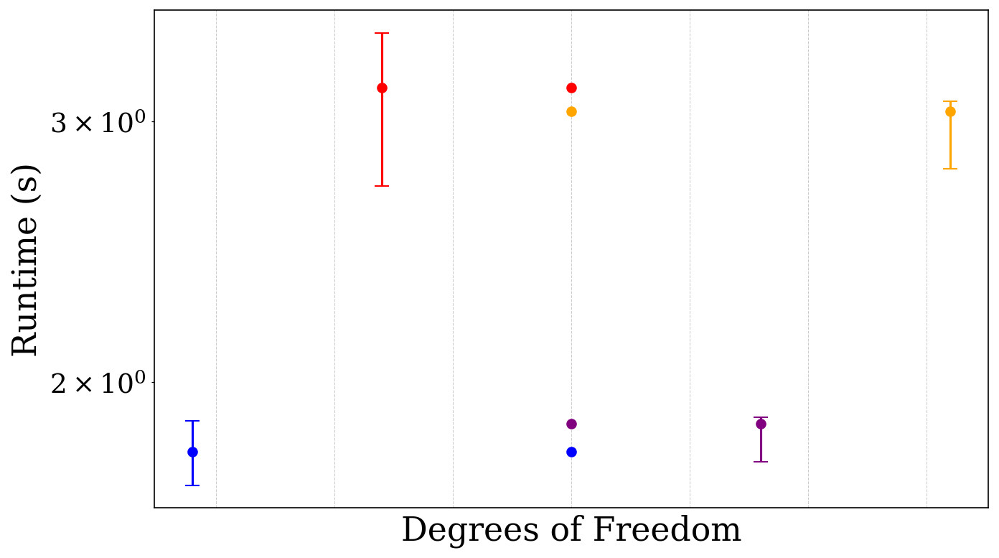
Runtime (scatter)
Ess
Ess (scatter)
Ess Per Sec
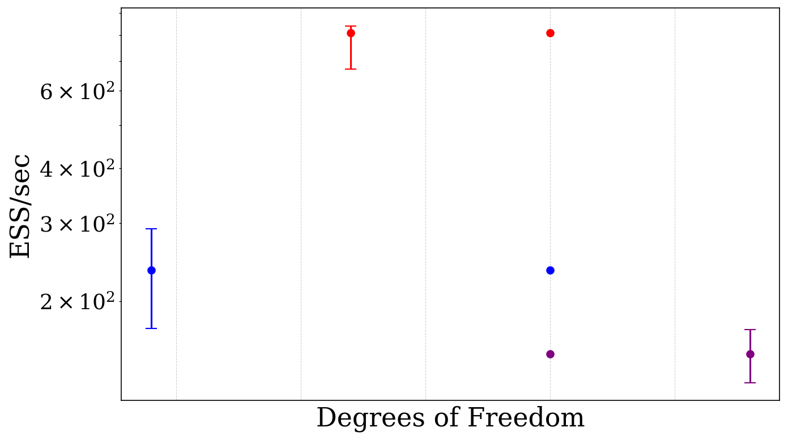
Ess Per Sec (scatter)
R Hat
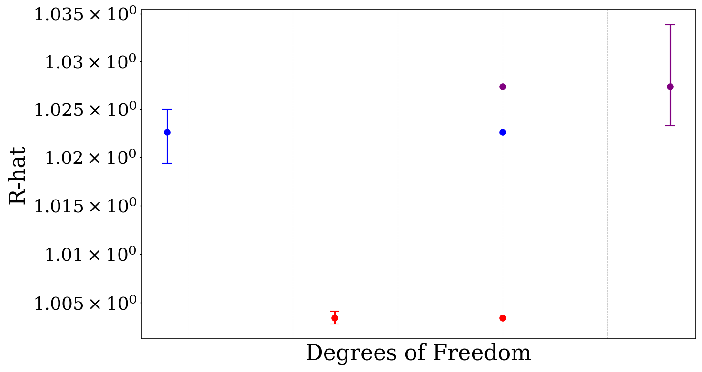
R Hat (scatter)
Mode Transitions

One Chain results
Mean Rmse
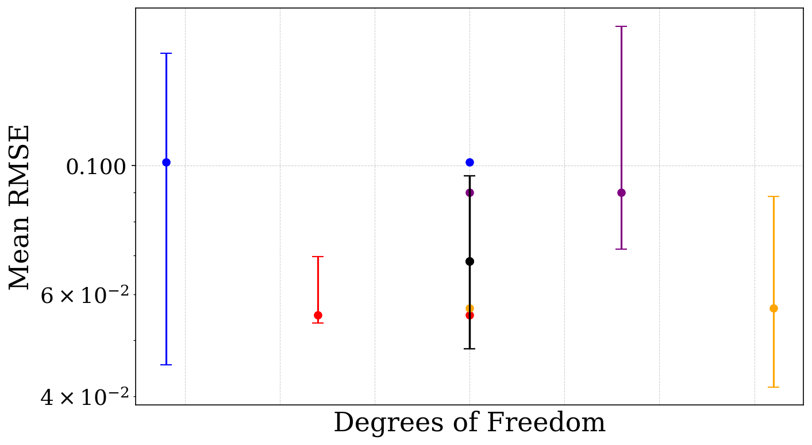
Sampler vs IID stats
| Sampler | Varying | t-stat | p-value | Glass Δ |
|---|---|---|---|---|
| DEMetro_Z | 2.1 | 1.410 | 0.19 | 1.218 |
| Metro | 2.1 | 1.216 | 0.255 | 1.204 |
| HMC | 2.1 | -0.047 | 0.964 | -0.025 |
| SMC | 2.1 | -0.765 | 0.457 | -0.347 |
Sampler vs Sampler stats
| Sampler Pair | Varying | t-stat | p-value | Cohen’s d |
|---|---|---|---|---|
| HMC_vs_SMC | 0 | 0.637 | 0.545 | 0.225 |
| HMC_vs_DEMetro_Z | 0 | -1.396 | 0.205 | -0.494 |
| DEMetro_Z_vs_SMC | 0 | 2.352 | 0.0509 | 0.832 |
| HMC_vs_Metro | 0 | -1.122 | 0.299 | -0.397 |
| Metro_vs_DEMetro_Z | 0 | -0.015 | 0.988 | -0.005 |
| Metro_vs_SMC | 0 | 1.690 | 0.135 | 0.597 |
Mean Rmse (scatter)
Glass’s Δ Mean RMSE
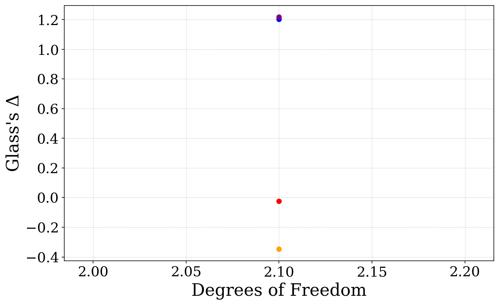
Glass’s Δ table
| Sampler | Varying | MCMC Mean | IID Mean | IID Std | Glass’s Δ |
|---|---|---|---|---|---|
| DEMetro_Z | 2.1 | 0.123 | 0.075 | 0.040 | 1.218 |
| Metro | 2.1 | 0.123 | 0.075 | 0.040 | 1.204 |
| HMC | 2.1 | 0.074 | 0.075 | 0.040 | -0.025 |
| SMC | 2.1 | 0.061 | 0.075 | 0.040 | -0.347 |
Var Rmse
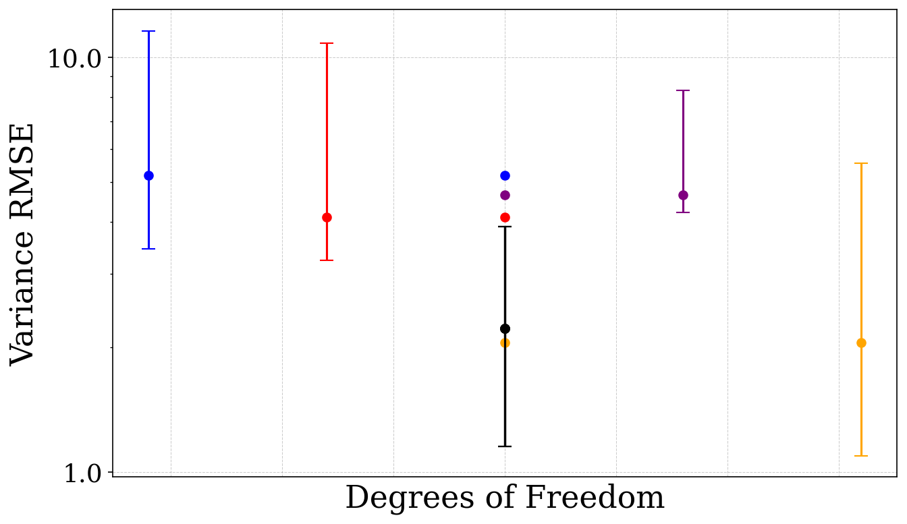
Sampler vs IID stats
| Sampler | Varying | t-stat | p-value | Glass Δ |
|---|---|---|---|---|
| DEMetro_Z | 2.1 | 0.148 | 0.884 | 0.064 |
| Metro | 2.1 | 0.202 | 0.843 | 0.086 |
| HMC | 2.1 | 0.256 | 0.802 | 0.113 |
| SMC | 2.1 | -0.215 | 0.833 | -0.092 |
Sampler vs Sampler stats
| Sampler Pair | Varying | t-stat | p-value | Cohen’s d |
|---|---|---|---|---|
| DEMetro_Z_vs_SMC | 0 | 3.779 | 0.0069 | 1.336 |
| Metro_vs_SMC | 0 | 1.995 | 0.0862 | 0.705 |
| Metro_vs_DEMetro_Z | 0 | 0.216 | 0.835 | 0.076 |
| HMC_vs_SMC | 0 | 1.842 | 0.108 | 0.651 |
| HMC_vs_DEMetro_Z | 0 | 0.411 | 0.693 | 0.145 |
| HMC_vs_Metro | 0 | 0.173 | 0.868 | 0.061 |
Var Rmse (scatter)
Glass’s Δ Variance RMSE
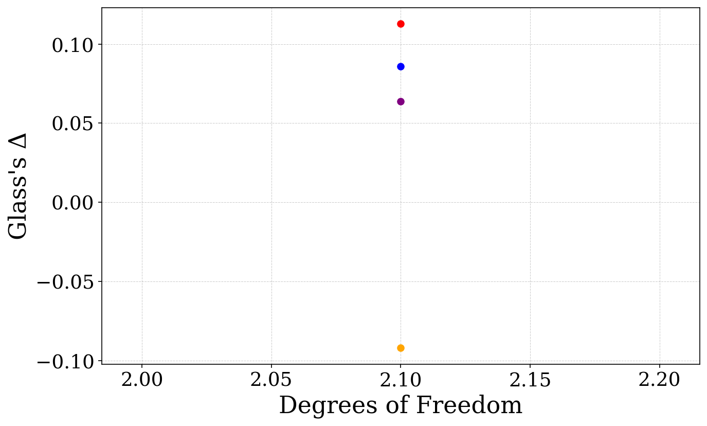
Glass’s Δ table
| Sampler | Varying | MCMC Mean | IID Mean | IID Std | Glass’s Δ |
|---|---|---|---|---|---|
| DEMetro_Z | 2.1 | 9.319 | 8.262 | 16.617 | 0.064 |
| Metro | 2.1 | 9.688 | 8.262 | 16.617 | 0.086 |
| HMC | 2.1 | 10.137 | 8.262 | 16.617 | 0.113 |
| SMC | 2.1 | 6.733 | 8.262 | 16.617 | -0.092 |
Wasserstein Distance
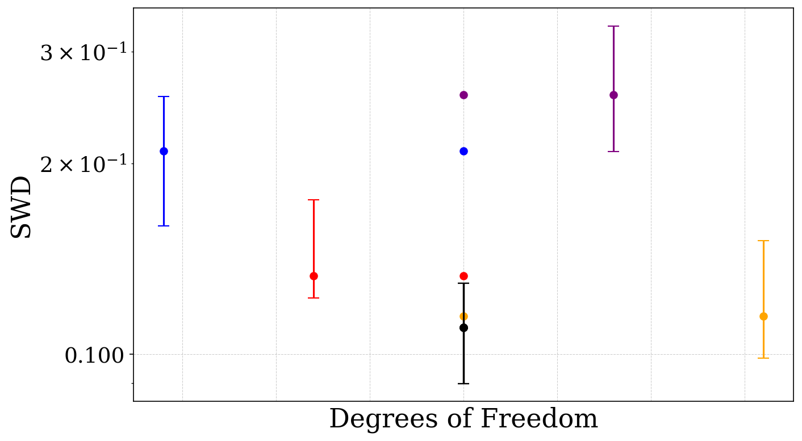
Sampler vs IID stats
| Sampler | Varying | t-stat | p-value | Glass Δ |
|---|---|---|---|---|
| DEMetro_Z | 2.1 | 4.075 | 0.00284 | 4.127 |
| Metro | 2.1 | 3.114 | 0.0113 | 2.664 |
| HMC | 2.1 | 1.538 | 0.149 | 0.951 |
| SMC | 2.1 | 0.481 | 0.638 | 0.228 |
Sampler vs Sampler stats
| Sampler Pair | Varying | t-stat | p-value | Cohen’s d |
|---|---|---|---|---|
| Metro_vs_SMC | 0 | 3.076 | 0.0179 | 1.087 |
| DEMetro_Z_vs_SMC | 0 | 4.741 | 0.0021 | 1.676 |
| HMC_vs_DEMetro_Z | 0 | -3.447 | 0.0107 | -1.219 |
| HMC_vs_SMC | 0 | 2.221 | 0.0618 | 0.785 |
| HMC_vs_Metro | 0 | -1.917 | 0.0967 | -0.678 |
| Metro_vs_DEMetro_Z | 0 | -1.476 | 0.183 | -0.522 |
Wasserstein Distance (scatter)
Glass’s Δ WS
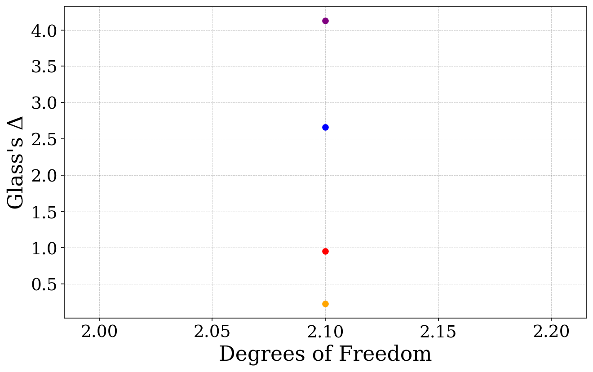
Glass’s Δ table
| Sampler | Varying | MCMC Mean | IID Mean | IID Std | Glass’s Δ |
|---|---|---|---|---|---|
| DEMetro_Z | 2.1 | 0.273 | 0.118 | 0.037 | 4.127 |
| Metro | 2.1 | 0.218 | 0.118 | 0.037 | 2.664 |
| HMC | 2.1 | 0.154 | 0.118 | 0.037 | 0.951 |
| SMC | 2.1 | 0.127 | 0.118 | 0.037 | 0.228 |
Mmd Rff
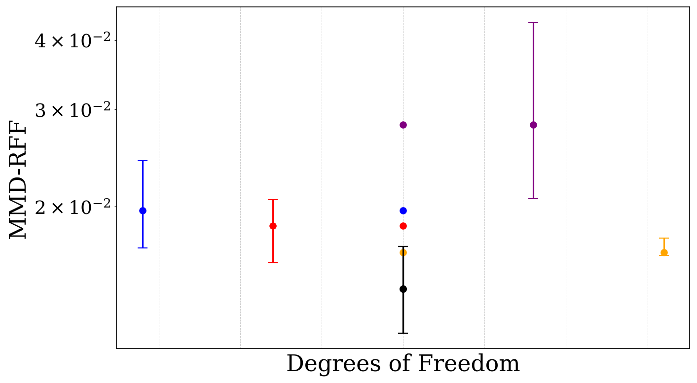
Sampler vs IID stats
| Sampler | Varying | t-stat | p-value | Glass Δ |
|---|---|---|---|---|
| DEMetro_Z | 2.1 | 3.339 | 0.0105 | 4.868 |
| Metro | 2.1 | 2.944 | 0.0121 | 1.869 |
| HMC | 2.1 | 2.359 | 0.035 | 1.431 |
| SMC | 2.1 | 1.947 | 0.0727 | 0.889 |
Sampler vs Sampler stats
| Sampler Pair | Varying | t-stat | p-value | Cohen’s d |
|---|---|---|---|---|
| Metro_vs_SMC | 0 | 1.605 | 0.153 | 0.567 |
| DEMetro_Z_vs_SMC | 0 | 2.841 | 0.025 | 1.004 |
| HMC_vs_DEMetro_Z | 0 | -2.234 | 0.0606 | -0.790 |
| HMC_vs_Metro | 0 | -0.702 | 0.505 | -0.248 |
| Metro_vs_DEMetro_Z | 0 | -2.536 | 0.0389 | -0.896 |
| HMC_vs_SMC | 0 | 1.142 | 0.291 | 0.404 |
Mmd Rff (scatter)
Glass’s Δ MMD-RFF
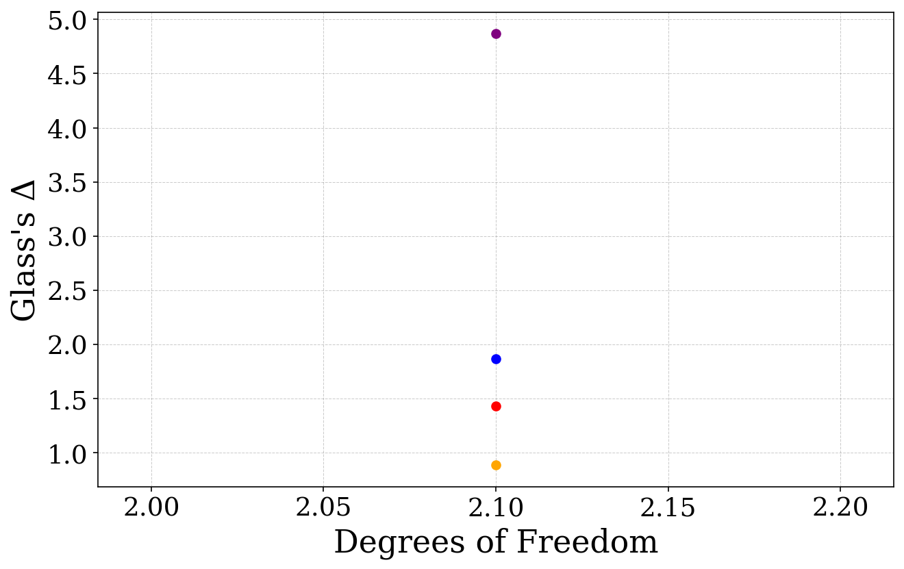
Glass’s Δ table
| Sampler | Varying | MCMC Mean | IID Mean | IID Std | Glass’s Δ |
|---|---|---|---|---|---|
| DEMetro_Z | 2.1 | 0.033 | 0.014 | 0.004 | 4.868 |
| Metro | 2.1 | 0.021 | 0.014 | 0.004 | 1.869 |
| HMC | 2.1 | 0.020 | 0.014 | 0.004 | 1.431 |
| SMC | 2.1 | 0.018 | 0.014 | 0.004 | 0.889 |
Runtime
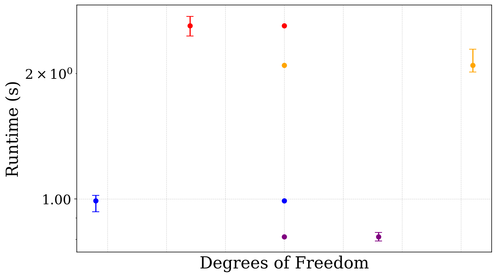
Runtime (scatter)
Ess
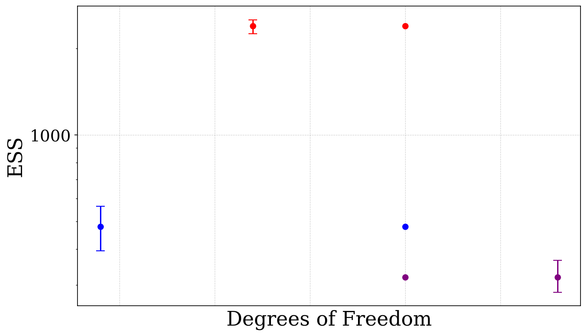
Ess (scatter)
Ess Per Sec
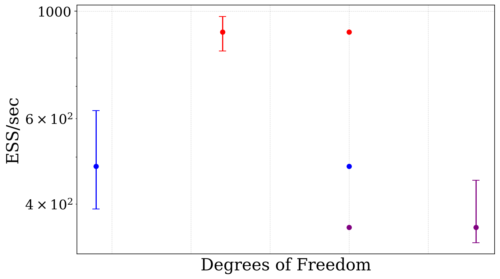
Ess Per Sec (scatter)
R Hat
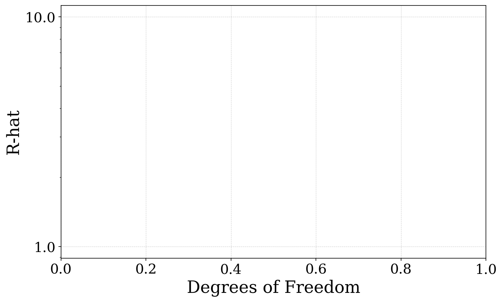
Mode Transitions
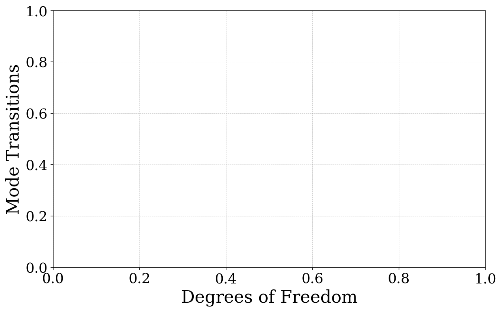
KDE + Init Plots
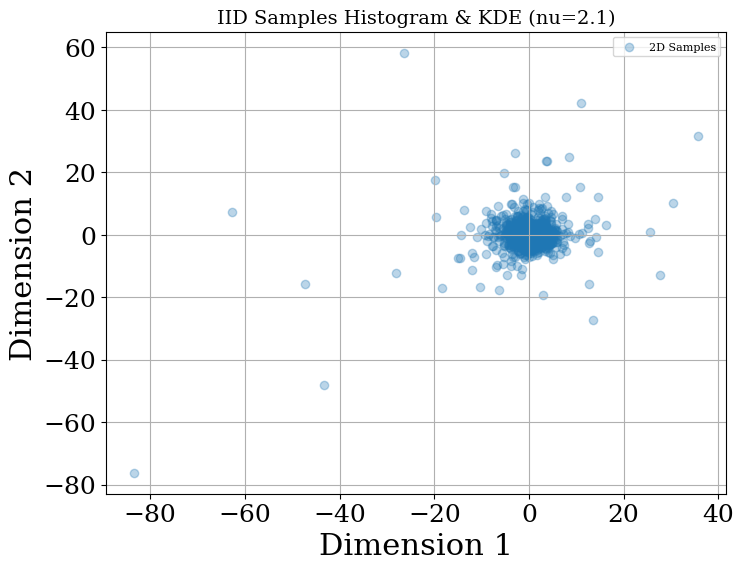
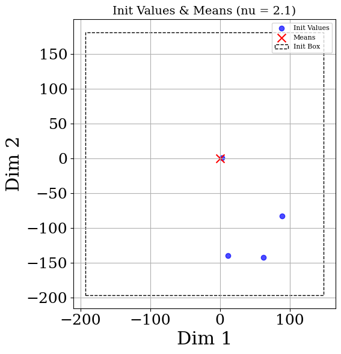

Forest & Ridge Plots
Pooled
2.1
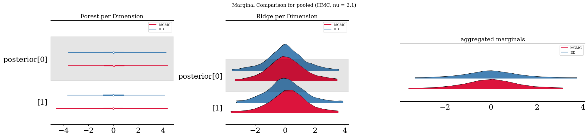
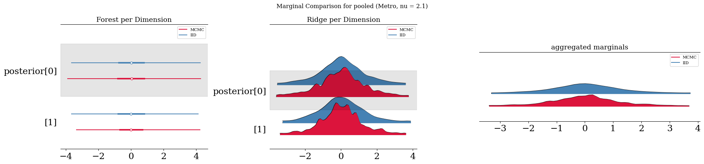
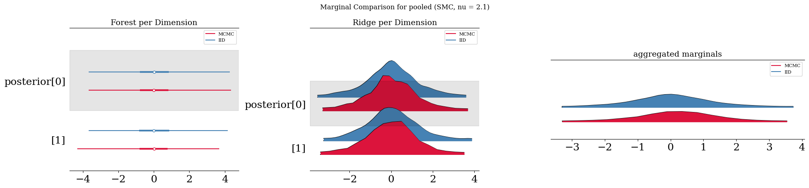
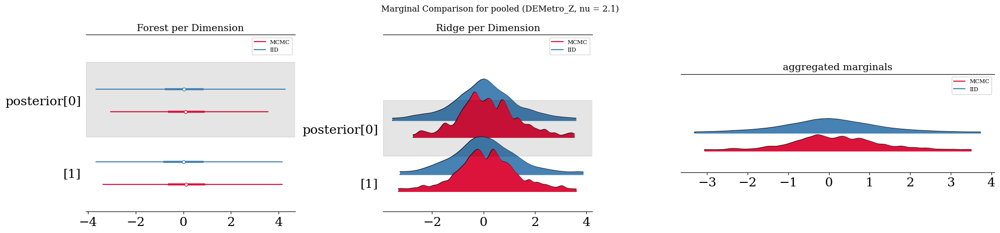
Chain
2.1
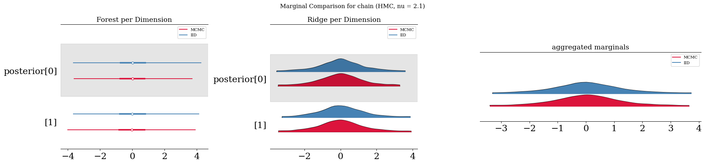
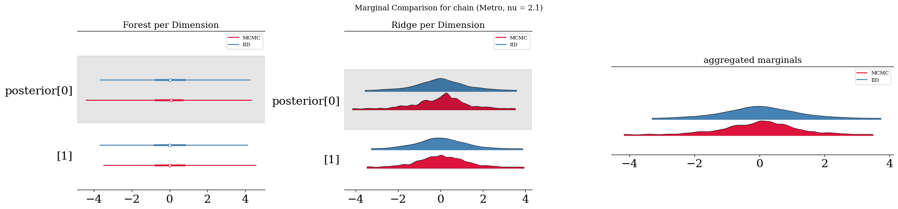
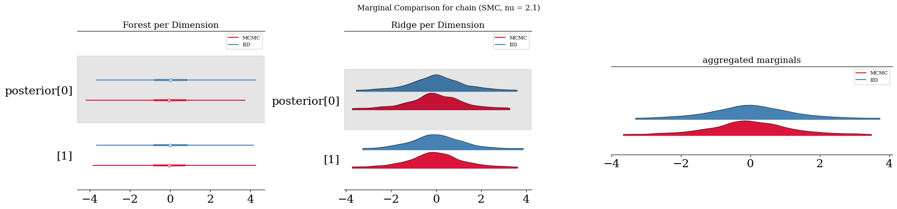
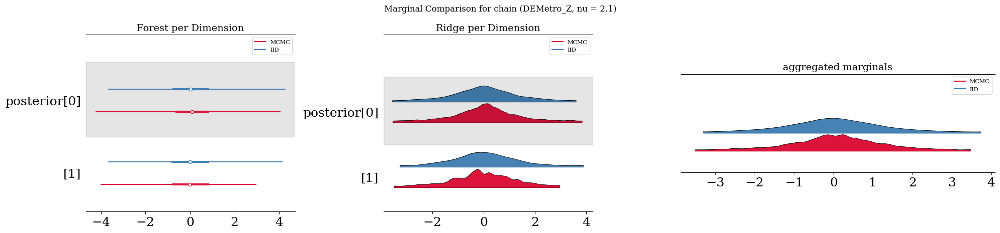
Pairwise Scatter Plots
Pooled
2.1
Chain
2.1